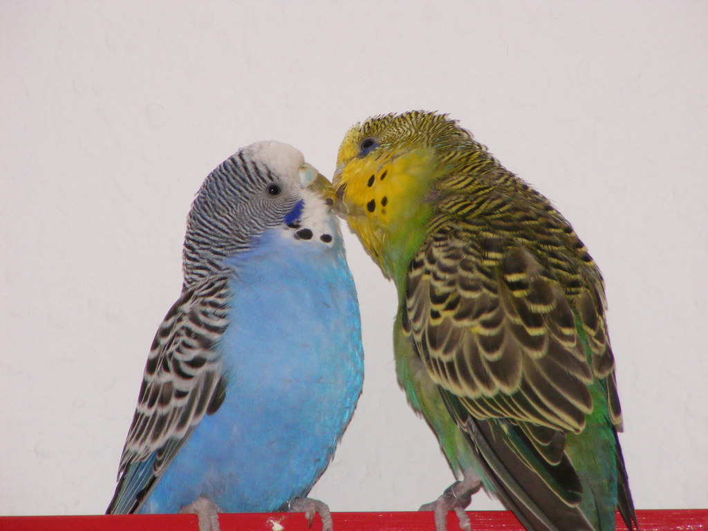

More on Budgies
Budgies, also known as parakeets, are cheerful and intelligent birds that make great companions. They are playful by nature with the ability to mimic sounds and having a strong emphasis on socializing. Whether you’re a first-time bird owner or not, budgies are a great addition to any home.
These birds thrive on interaction and stimulation. Budgies are social animals by nature and will need daily attention and playtime. They need plenty of toys for enrichment and company to stay happy. If you’re someone who tends to be away from home for most of the day, consider getting a pair or more to keep them socializing — the more the merrier! Their small size makes them easy to house, though the cage size should increase depending on how many budgies you own. For more on how budgies thrive socially, check out this helpful article from Doggo Digest: How Budgies Thrive on Social Interaction.
Budgie Care Essentials
- Feed a balanced diet of seed mix or pellets, with fresh vegetables and occasional fruits without seeds. For more information, check out our page on diet and excersise
- Provide clean, fresh water daily and clean food dishes regularly.
- Choose a cage at least 18x18x18 inches with horizontal bars, perches, and toys.(Bigger size depending on amount of budgies)
- Place the cage in an area away from direct sunlight and loud noises.
- Clean the cage bottom and perches weekly to maintain hygiene.
- Offer toys and rotate them to prevent boredom and encourage mental stimulation.
- Allow supervised flying time in a safe space for exercise and happiness.
- For a detailed feeding/housing guide, see PetMD’s Budgie Care Sheet .
Thinking of adopting a budgie?
With the right care, these feathered friends will bring joy, color, and personality into your life!